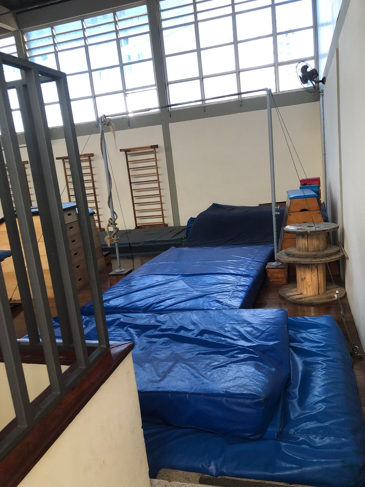
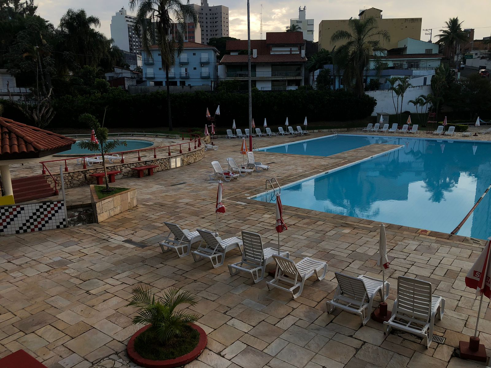

A rede SESI (Serviço Social da Indústria), tem uma das maiores redes de ensino particular, composta por 142 escolas, presentes em 112 munícipios do estado de São paulo.
Oferece as modalidades: Educação infantil, Ensino fudamental, Ensino médio, Educação profissional técnica de nivel médio e Educação de jovens adultos.
O sesi-123 é uma das unidades da rede sesi, que se encontra em Sorocaba na Rua Duque de Caxias, 494 - Mangal, Sorocaba - SP, 18040-350.
Essa unidade conta com dois prédios, que oferecem o ensino fundamental até o ensino médio, que contém áreas ao ar livre, bibliotecas e refeitórios.
O sesi-123 também tem uma área para socios e estuantes.
Esse espaço é o centro esportivo, ou clube, e agrega salas para espotes, danças, area com piscinas, quadras e entre outras coisas.
 